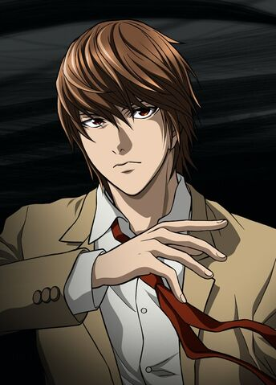

Dead Note - Light Yagami

*Descripción
De aspecto fisico fragil, ojos marron y cabello castaño, Light se caracteriza como un chico aburrido, valeroso e inteligente. Tiene 17 años a pesar de ser joven, tiene un gran sentido de lógica y creatividad que lo hace diferente a los demas. Light es un hombre decidido y directo en lo que piensa, capaz de llegar a extremos inimaginables con tal de lograr su cometido.
*Porque es el favorito?
Explota al máximo sus capacidades para lograr sus objetivos, tiene el deseo de un mundo en paz y sobre todo cree que se debe ser justo conforme a tus acciones.